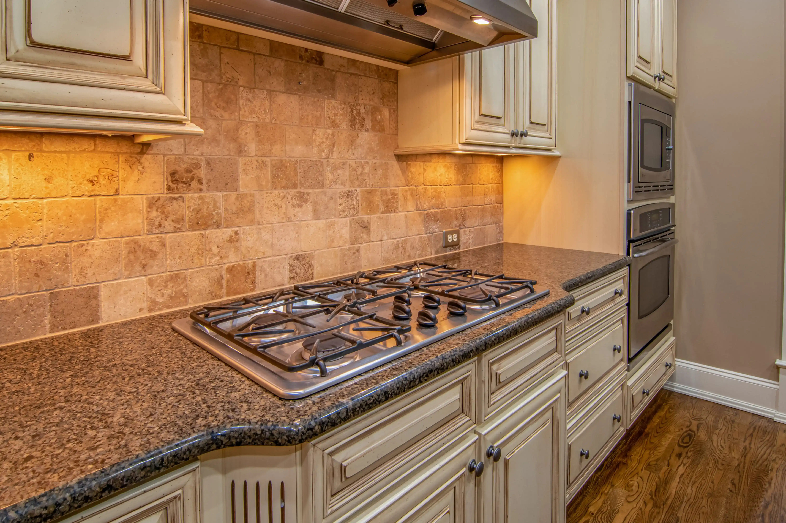

5 hornillas profesionales
Quemadores de hasta 4.5 kW para un control preciso del fuego, desde el sellado perfecto hasta la cocción lenta.
Diseñada para quienes no aceptan menos que lo mejor.La potencia de una cocina de restaurante, ahora en casa.
$4.299.000

Quemadores de hasta 4.5 kW para un control preciso del fuego, desde el sellado perfecto hasta la cocción lenta.
Sistema de encendido piezoeléctrico integrado en cada hornilla. Sin chispas, sin esperas, sin esfuerzo.
Acabado en acero inoxidable 304 de grado profesional. Resistente, higiénico y diseñado para durar décadas.
Termocupla en cada hornilla. Si la llama se apaga, el gas se corta automáticamente.
Distribución uniforme del calor. Soportan hasta 15 kg por parrilla.
Cobertura total en piezas y mano de obra. Servicio técnico a domicilio incluido.
| Potencia total | 19.5 kW (19,500 kcal/h) |
|---|---|
| Distribución de hornillas | 2× 4.5 kW (wok) · 2× 3.0 kW (estándar) · 1× 1.5 kW (auxiliar) |
| Dimensiones | 90 cm (ancho) × 60 cm (fondo) × 87 cm (alto) |
| Peso neto | 52 kg |
| Material principal | Acero inoxidable AISI 304 |
| Parrillas | Hierro fundido esmaltado |
| Tipo de gas | Gas natural (G20) · Adaptable a GLP/Propano (kit incluido) |
| Encendido | Piezoeléctrico automático con retorno de seguridad |
| Garantía | 5 años piezas y mano de obra |
| Certificaciones | CE · ISO 9001 · NTC 3826 (norma colombiana gas doméstico) |
El equipo ocupa un espacio estándar de 90 cm de ancho. Es compatible con módulos de cocina convencionales y puede instalarse de forma empotrada o independiente.
Sí. Viene configurada para gas natural y se puede adaptar a gas propano con el kit de conversión incluido. La instalación debe realizarse por un técnico certificado.
Solo un cuidado básico: secado inmediato tras el lavado y una ligera aplicación de aceite ocasional. Con ese manejo, duran toda la vida.
Sí. Las parrillas de hierro fundido son compatibles con cualquier tipo de base: acero, aluminio, cobre, barro y cerámica. No aplica para inducción.
Registra tu producto en nuestra web dentro de los 30 días posteriores a la compra. Ante cualquier falla, nuestro equipo técnico responde en menos de 48 horas hábiles.
Habla con un asesor o déjanos tus datos y te contactamos en menos de 2 horas.
WhatsApp